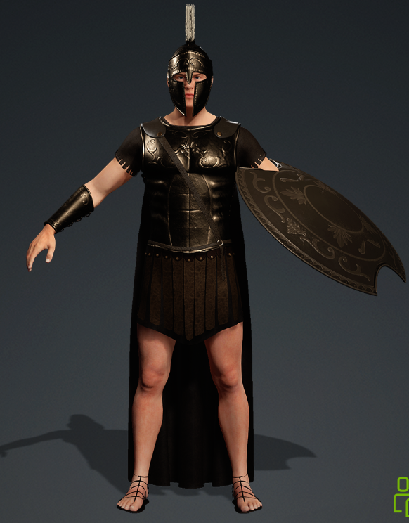
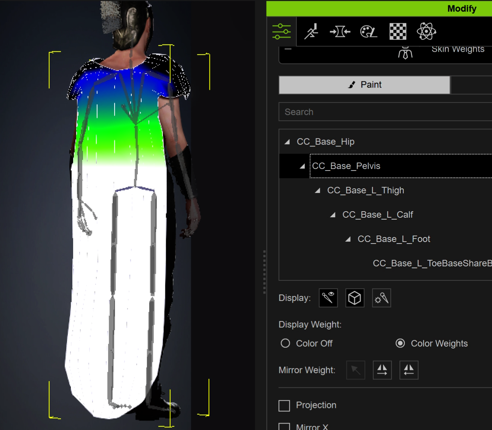
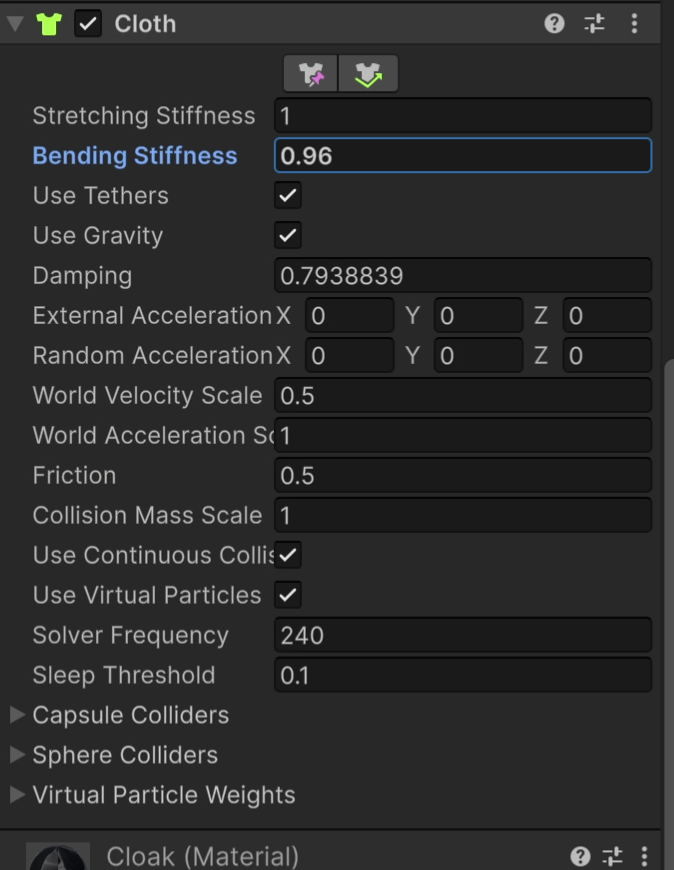

Actual mobile character runtime.
The video shows the interactive Android build. The character can switch animation states at runtime while the cape continues to simulate inside Unity rather than replaying a baked cloth cache.
The shared Drive folder contains the Android APK for hands-on testing.
One character. Full runtime proof.
The goal was not to make another beauty render. The goal was to prove that I can generate, integrate, animate, troubleshoot, and deploy a character inside a mobile Unity runtime.
CC4 Character Setup
The base character was created and prepared in Character Creator, then adapted for the Roman historical outfit and Unity mobile runtime.
Humanoid + Skin Weights
The cape’s base deformation and influences were cleaned before export so runtime cloth could operate from a stable skinned pose.
Five Runtime States
ARGUE, DANCE, FIGHT, POINT, and TALK can be triggered interactively with runtime transitions.
Unity Runtime Simulation
The cape uses Unity Cloth with constraint painting, body collision, solver tuning, damping, stiffness, and world-motion response.
Camera + Look At
The build includes touch orbit and zoom, talk close-up behavior, look-at control, cloth control, and runtime UI.
Android Build
The system is packaged as an APK so the animation and cloth behavior can be evaluated outside the Unity Editor.
Character generation to Android runtime.
The test was intentionally structured around the parts of a production character pipeline that have to survive outside a DCC tool.
Roman character asset integration.
For this focused technical test, I used a CC4 base character and a sourced Roman armor/cape outfit, then concentrated the work on fitting, deformation, runtime animation, cloth behavior, and mobile integration rather than costume modeling.


Base deformation before physics.
The cape is not treated as an isolated effect. Its skinned base state first needs stable bone influences. This makes the runtime cloth predictable when the animation changes.
The cloth is solved inside Unity.
This is the central reason for the new test. The cape is not an offline simulation exported as a recorded cache. Animation changes drive the character, and Unity continues to calculate the cape’s secondary motion at runtime.

Runtime cloth implementation
Constraint authoring. The upper cape remains tightly controlled while the lower region receives progressively more freedom.
Character collision. Body colliders keep the cape responding to the animated character rather than passing freely through the body.
Solver tuning. Bending, damping, world velocity response, collision behavior, and solver frequency were tuned while testing multiple character motions.
Animation-independent behavior. The same cape simulation responds to ARGUE, DANCE, FIGHT, POINT, and TALK without requiring a separate baked cloth cache for each motion.
What I built and what I adapted.
Base character: created and prepared in Character Creator.
Historical costume and armor: sourced Roman character assets adapted for this real-time Unity mobile test rather than modeled from scratch.
My technical work: character and costume fitting, humanoid integration, skin-weight cleanup, motion integration and runtime switching, Unity Cloth setup and tuning, camera interaction, look-at behavior, UI, and Android deployment.
Built to answer one production question.
Can I take a historical character into Unity mobile and make the rig, animation, cloth, interaction, and deployment work as a runtime system? This focused test is my direct answer.